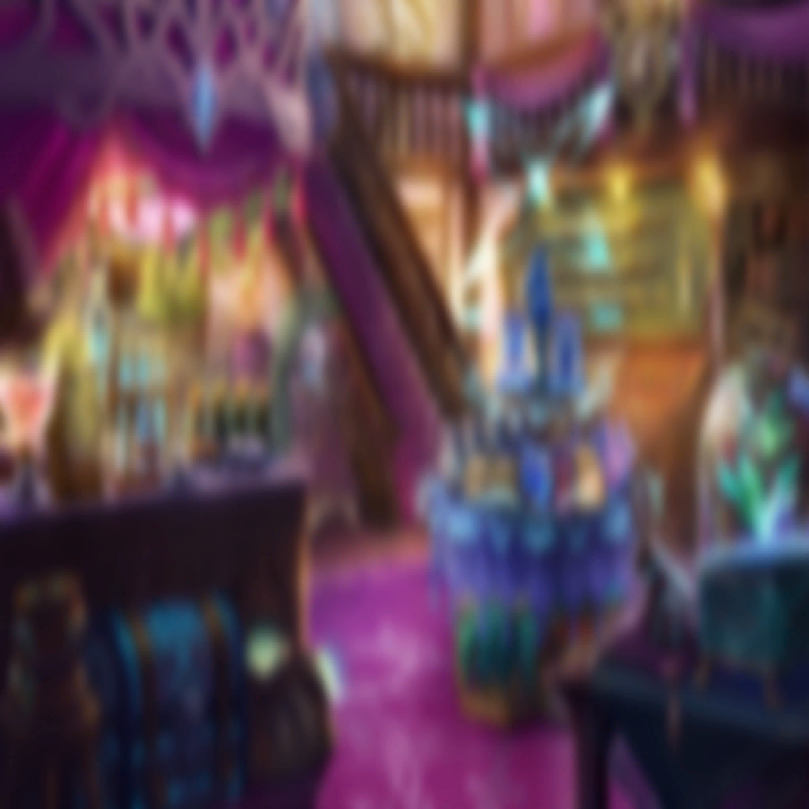

|
 |

レティシア |
売り物になるのね。私 |
| エフィリンド |
… |
レティシア |
憂う必要はないわ
思うことなど何ひとつないもの |
レティシア |
ただ、空虚なだけ
昏き洞で…夢の残響のみを
懐かしむことにするわ |
レティシア |
貴方と壊し合った日々だけよ
いま瞼の裏に見える光は |
レティシア |
…愉しかった |
| |
（ハイエルフとダークエルフの戦
永劫続くような絶望、救いなき戦場） |
| |
（あなたとの間に吹く風だけが
僅かな光に見えた） |
| |
（だけど
その夢のような刹那も終わり） |
| |
（あなたは同族により
術を行使する魔力すら封じられ
無抵抗な奴隷“商品”として売られていく） |
| |
（かつて私たちが他種族へ抱いた絶望を今
私たちがかつての同族へ味わわせている） |
レティシア |
『眩き者を弑逆せよ』 |
レティシア |
『汝、暗闇の王なり
闇の王、誰が為に、征かんや
誰が為に、戦わんや』 |
レティシア |
夢なき幾星霜の眠りを経て
“闇の王”が現れたなら、その刻は |
|
レティシア |
その刻
約束の刃を受けて
お別れ |
レティシア |
その刻
はじめて本当の眠りにつけるわ |
 |
| エフィリンド |
… |
| アイナンナ |
… |
| エフィリンド |
…………アイナンナ様…？ |
| アイナンナ |
… |
| エフィリンド |
ふふ…
勉強中に居眠りなど…
先生として立つ瀬がありませんね |
| アイナンナ |
…悲しい、夢を見てたんですね |
| エフィリンド |
…………いいえ |
| アイナンナ |
騙されませんよ。センセ |
| エフィリンド |
いいんです。私の夢など |
| アイナンナ |
センセがどうして
さびしそうな顔をするのか
フシギだったんです |
| エフィリンド |
…え？ |
| アイナンナ |
ダークエルフのお話も、幻術のお話も
ハイエルフにとってはイイことなのに
ハイエルフを守る為の手段のお話なのに |
| エフィリンド |
… |
| アイナンナ |
でも今、少しわかったような気がする…
センセの夢を、わらわも見ました
わらわの夢も、センセが見ました |
| エフィリンド |
…！
やっぱり、以前の悪夢も
アイナンナ様と私が同じ夢を…!? |
| アイナンナ |
今の、センセの夢も… |
| エフィリンド |
でも、どうして…………？ |
| アイナンナ |
ハイエルフ王家の純血統であるわらわは
その能力に長けているのだと思います
予見、予知夢… |
| アイナンナ |
そして、この耳が
相手の心と共振するアンテナのようになって
夢を、気持ちを、共有した… |
| アイナンナ |
こんなこと初めてです…
ハイエルフとしての術力を
高め続けてきたセンセとだからなのか… |
| エフィリンド |
…！ |
| アイナンナ |
ね、センセ…さびしいならね？
わらわもそうなんです、夜は特に |
| エフィリンド |
…ええ |
| アイナンナ |
夜…
一緒にベッドへ入りませんか？ |
| エフィリンド |
な、ん、そ…ッッ
そんなこと、ダメです…！ |
| アイナンナ |
どうして？ |
| エフィリンド |
私のような身分の者が
王女様と床をともにするなど…
は、はしたないです、ダメですダメです |
| アイナンナ |
ダメって言われるとォ～… |
| エフィリンド |
も、燃えちゃダメですっ！
アアッ!? ちがう！ バツー！
バッテンですからッ！ |
|  |
| アイナンナ |
誰もいませんよォ～？
怒るヒトも、責めるヒトも謗るヒトも
だぁれも、いませんよォ～？ |
| エフィリンド |
えっ、ぃえっ、あのっ |
| エフィリンド |
ちょっと私、今、寝汗で、アレなので…
ちょっと、
離れていただいてもいいですか…！ |
| アイナンナ |
別にいいのに汗くらい |
| エフィリンド |
く、くっつくのをまず
やめてもらっていいですか…っ!? |
| アイナンナ |
ふふ…センセ、かわいい |
|
| エフィリンド |
～～～っ
こ、困らせないでください…！ |
| アイナンナ |
はしたないと言えば、センセがね
なんかエッチな恰好してる夢も見ました |
| エフィリンド |
えっ、えっ、エッッッ…!? |
| アイナンナ |
パンを誰かに勧めてる夢、見ました
はしたない、エッチな恰好で |
| エフィリンド |
わ、私も、み、見ましたけど
あんな、どうしてあんな恰好っ…！
アレ私なんでしょうか…!? 未来の…？ |
| エフィリンド |
…アイナンナ様？ |
| アイナンナ |
もしかしたら、わらわには
とても難しいかもしれないけど
聞かせて欲しいの |
| アイナンナ |
さっきの、センセの夢
これからの、センセの夢 |
| エフィリンド |
…申し訳ありません |
| アイナンナ |
謝られるのはさびしいよ |
| エフィリンド |
夢で話していたような…
私が同族に感じた嫌悪感は
王女様への批判に直結します |
| エフィリンド |
王女様やこの里のハイエルフたちが
ダークエルフや他種族を拒絶することに
異を述べることはありません |
| エフィリンド |
戦いが終われば平穏…ではなかった
争い打ち勝つよりも難しかった
誰かの見え方を変えるのは |
| エフィリンド |
ただ私は…もう疲れてしまったので |
| アイナンナ |
………… |
| エフィリンド |
残された時間は、せめて………… |
| アイナンナ |
…予知夢で見た里は
誰ひとり息づかない凍った都になっていました
きっと遠くない未来、孤立したココの姿 |
| アイナンナ |
今までのように
ただ時の流れに身を任せているだけでは
きっといけないんです |
| アイナンナ |
センセが外界で学んできたこと…
わらわがこれから学ぶこと…
間違ったと思ったこと… |
| アイナンナ |
いっぱい教えてください
休み休みで、いいですから |
| エフィリンド |
アイナンナ様… |
| アイナンナ |
誰もがさびしくないような…他種族も
ダークエルフも、分け隔てない居場所に
この里をより豊かなものにできたら… |
| アイナンナ |
そうしたら
センセの疲れも癒せませんか？
もっともっとゆっくりと眠れませんか？ |
| エフィリンド |
…………それは
アイナンナ様の夢とは異なりませんか？ |
| アイナンナ |
センセの夢を見て、イヤだと思ったんです
誰もいなくなって…それでキレイなんて
そんなのはイヤなんだって |
| アイナンナ |
敵も味方もない…みんな揃って
安心して眠れる夜が迎えられるような…
そんな理想的な美しい国が、いいです |
| エフィリンド |
…………理想郷、ですね |
| アイナンナ |
ダメ…………？ |
| エフィリンド |
………… |
| エフィリンド |
ダメと言われると、ですねえ── |